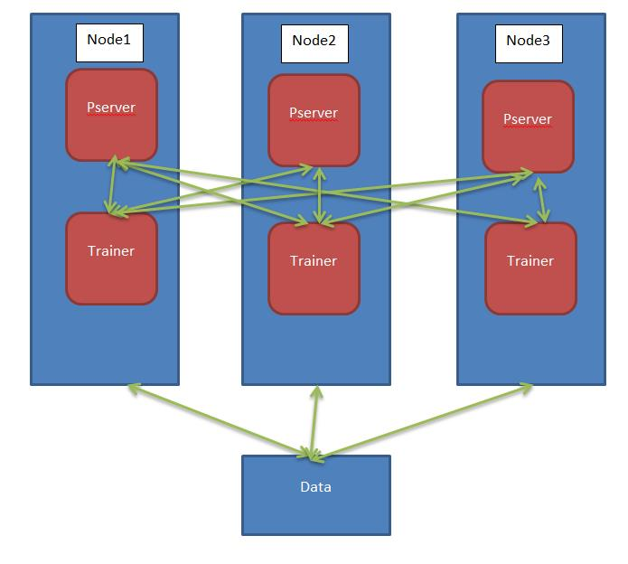
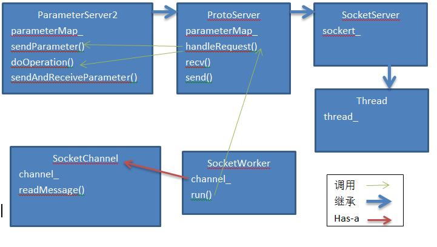

Paddle 源码阅读
安装Paddle
下载paddle镜像
docker pull paddledev/paddle:cpu-demo-latest
启动Paddle容器
docker run -it paddledev/paddle:cpu-demo-latest
cd /root/paddle
单机运行Paddle
cd demo/recommendation
sh run.sh
Debug paddle
执行下面命令
export DEBUGGER="gdb --args"
cd demo/recommendation
sh run.sh 如果没有安装gdb，执行命令
apt-get install gdb
分布式运行可以去节点上通过gdb –pid命令debug
分布式运行
准备环境
安装sshd:
apt-get install openssh-server
/etc/init.d/ssh start
ssh-keygen -t rsa
运行另一个paddle容器并准备ssh环境
docker run -it paddledev/paddle:cpu-demo-latest
apt-get install openssh-server
/etc/init.d/ssh start
ssh-keygen -t rsa
把两个容器的key加入到~/.ssh/authorized_keys
启动分布式paddle
cd paddle/scripts/cluster_train
修改conf.py
HOSTS = [
"root@172.17.0.7",
"root@172.17.0.8",
]
export PATH_TO_LOCAL_WORKSPACE=/root/paddle/demo/recommendation
sh run.sh
root@172.17.0.7上的启动命令是：
[root@172.17.0.7] run: cd /home/paddle/JOB20160831115853; GLOG_logtostderr=0 GLOG_log_dir="./log" nohup paddle pserver --num_gradient_servers=2 --nics=eth0 --port=7164 --ports_num=2 --ports_num_for_sparse=2 --comment=paddle_process_by_paddle > ./log/server.log 2>&1 < /dev/null &
[root@172.17.0.7] run: cd /home/paddle/JOB20160831115853; GLOG_logtostderr=0 GLOG_log_dir="./log" nohup paddle train --num_gradient_servers=2 --nics=eth0 --port=7164 --ports_num=2 --comment=paddle_process_by_paddle --pservers=172.17.0.7,172.17.0.8 --ports_num_for_sparse=2 --config=./trainer_config.py --trainer_count=4 --use_gpu=0 --num_passes=10 --save_dir=./output --log_period=50 --dot_period=10 --saving_period=1 --local=0 --trainer_id=0 > ./log/train.log 2>&1 < /dev/null & root@172.17.0.8上的启动命令是：
[root@172.17.0.8] run: cd /home/paddle/JOB20160831115853; GLOG_logtostderr=0 GLOG_log_dir="./log" nohup paddle pserver --num_gradient_servers=2 --nics=eth0 --port=7164 --ports_num=2 --ports_num_for_sparse=2 --comment=paddle_process_by_paddle > ./log/server.log 2>&1 < /dev/null &
[root@172.17.0.8] run: cd /home/paddle/JOB20160831115853; GLOG_logtostderr=0 GLOG_log_dir="./log" nohup paddle train --num_gradient_servers=2 --nics=eth0 --port=7164 --ports_num=2 --comment=paddle_process_by_paddle --pservers=172.17.0.7,172.17.0.8 --ports_num_for_sparse=2 --config=./trainer_config.py --trainer_count=4 --use_gpu=0 --num_passes=10 --save_dir=./output --log_period=50 --dot_period=10 --saving_period=1 --local=0 --trainer_id=1 > ./log/train.log 2>&1 < /dev/null &

Paddle的架构如上图所示，paddle在每台节点启动PServer和Trainer的两个进程。
PServer进程
PServer进程：入口paddle/pserver/ParameterServer2Main.cpp
在paddle/pserver/ParameterServer2Main.cpp:34看到启动ParameterServer2的数量
int numPorts = FLAGS_ports_num + FLAGS_ports_num_for_sparse;
例子中ports_num + ports_num_for_sparse=4

ParameterServer2类继承ProtoServer类继承SocketServer。并在paddle/pserver/LightNetwork.cpp:191 SocketServer::tcpServer会启动tcpserver，接收客户端连接，每个连接创建SocketWorker线程类。SocketWorker类中的channe负责网络收发，并调用handleRequest()处理请求，handleRequest中根据请求的funcName调用相应的函数。主要函数入口有ParameterServer2类的sendParameter()和doOperation()。sendParameter()的作用是处理非同步的请求，如SET_PARAM，GET_PARAM，ASYNC_SGD，ADD_GRADIENT，AVERAGE_PARAMETER。doOperation()的主要作用是处理sync-sgd。
sync-sgd时，客户端通过controller线程发送op_SGD 命令到PServer，然后立即发送sendParameter请求，PServer端通过doOperation()和sendParameter()调用完成sync-sgd的梯度合并和优化。
| 并行方式 | 区别 | |
| sync-sgd | Client通过controller和所有pservers建立连接，传输数据需要barrier同步，发送和merge梯度都是以block为单位，节省网络开销 | |
| async-sgd | Client不同pservers的连接不需要barrie同步，梯度立即发送 | |
</tbody>
</table>
SocketWorker类有2个成员变量，channel负责网络收发，server负责处理请求。
std::unique_ptr channel_;
SocketServer* server_;
### Trainer进程 ###
主线程的堆栈
Thread 1 (Thread 0x7f60c34f4780 (LWP 1893)):
#0 sem_wait () at ../nptl/sysdeps/unix/sysv/linux/x86_64/sem_wait.S:85
#1 0x0000000000619ff3 in wait (this=) at /root/paddle/paddle/utils/Locks.h:144
#2 waitOutArgsReady ()
at /root/paddle/paddle/gserver/gradientmachines/MultiGradientMachine.h:367
#3 paddle::MultiGradientMachine::getOutArgs ()
at /root/paddle/paddle/gserver/gradientmachines/MultiGradientMachine.cpp:357
#4 0x0000000000618a3e in paddle::MultiGradientMachine::forwardBackward()
at /root/paddle/paddle/gserver/gradientmachines/MultiGradientMachine.cpp:291
#5 0x000000000066205c in paddle::TrainerInternal::forwardBackwardBatch()
at /root/paddle/paddle/trainer/TrainerInternal.cpp:299
#6 0x0000000000662ab7 in paddle::TrainerInternal::trainOneBatch ()
at /root/paddle/paddle/trainer/TrainerInternal.cpp:117
#7 0x000000000065da30 in paddle::Trainer::trainOnePass ()
at /root/paddle/paddle/trainer/Trainer.cpp:434
#8 0x0000000000661247 in paddle::Trainer::train ()
at /root/paddle/paddle/trainer/Trainer.cpp:280
#9 0x000000000050b083 in main ()
at /root/paddle/paddle/trainer/TrainerMain.cpp:100
主线程初始化会启动FLAGS_trainer_count个TrainerThread，例子中是4个paddle/gserver/gradientmachines/MultiGradientMachine.cpp:134
TrainerThread负责真正的计算，主线程通过getOutArgs()等待计算结果。
主线程会设置updateCallback，在回调中向PServer更新参数。
更新参数是异步的，主线程中会创建SparseRemoteParameterUpdater和RemoteParameterUpdater两个线程。跟启动参数中ports_num+ports_num_for_sparse对应。可以看出Sparse和非Sparse是分开的。
RemoteParameterUpdater类和SparseRemoteParameterUpdater类中创建ParameterClient2类负责网络收发。

BaseClient类中启动一组接收线程，接收队列，发送线程，发送队列，数量等于实际PServer数量。
/// nodes * ports that means the number of real pservers
int serviceNum_;
假如有n个PServer进程，sendParameter()把参数或数据放到n个sendJobQueue_里面，n个sendThread_从各自的sendJobQueue_取出并同时发送到n个PServer。避免网络拥塞。以下是代码中原话，作者假设pserver最多就几百个，这种基于线程的并行方式是有效的，对于更大的集群，可能会有问题。
/**
* threads num for managing all services. Normally the
* number of pservers are relatively less than several
* hundreds so that using thread-based parallelization
* can benifit traffic performance and pserver's sgd
* optimization performance.
*/
int threadNum_;
ParameterUpdaterCreators根据配置文件创建相应的ParameterUpdater。
SgdThreadUpdater，SgdLocalUpdater，SgdUpdaterWithCpuAverager是local的ParameterUpdater，不需要连接PServer。其他的是remote的ParameterUpdater需要连接PServer。
在Trainer::init paddle/trainer/Trainer.cpp:240中，初始化ParameterUpdater，
trainerInternal_.getParameterUpdater()->init(parameters);
Local的ParameterUpdater类在forward()前调用startBatch()，在backward后调用finishBatch()，在forward()和backward()中会多次调用update()更新weight。ParameterUpdater类的startBatch()， finishBatch()，update()主要调用ParameterOptimizer的同名函数。
Remote的ParameterUpdater类主要区别在于finishBatch()中会跟PServer更新参数。
SparseRemoteParameterUpdater所有参数都在PServer端，所以不需要localUpdater_，它的updateImpl实现是空的。在forward()前要从PServer拉weight,每次只拉需要的部分，所以参数可以非常大。在finishBatch()中，调用sendAndReceiveParameter发送delta到PServer，并拉取最新的参数。controller()线程函数中通过PSERVER_OP_START_PASS，PSERVER_OP_SGD，PSERVER_OP_FINISH_PASS操作命令在服务器端更新参数。
ConcurrentRemoteParameterUpdater在RemoteParameterUpdater基础上加了一个优化：
pipeline device-to-host copy and host-to-network to hide network latency in backward stage.
并且在不同的线程里面发送和接收。参数可以在本地也可以在PServer端，如果在本地通过localUpdater_更新，如果在PServer端通过controllerThread_更新(猜的，不知道对不对？)